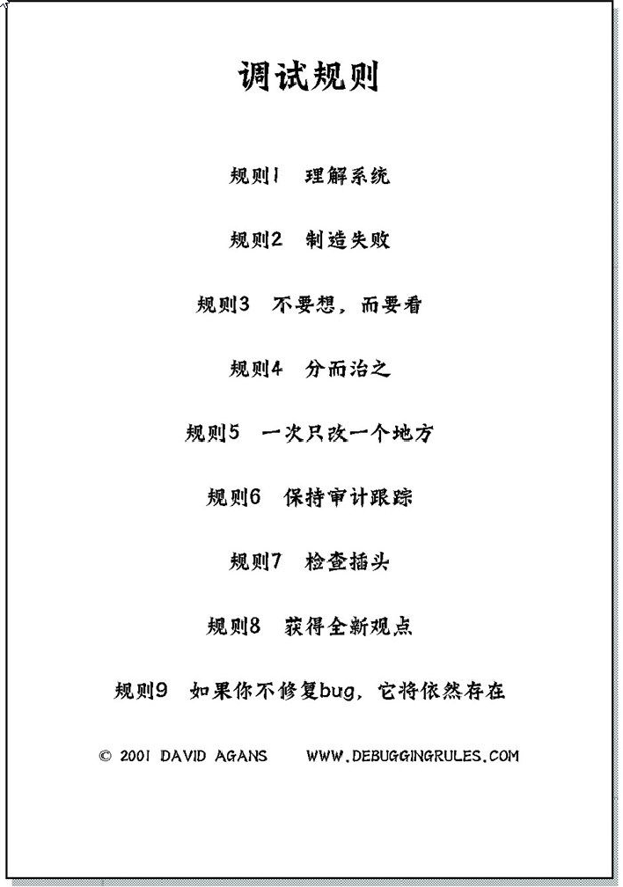

调试九法:软硬件错误的排查之道-阅读笔记
目录
Debugging: The 9 Indispensable Rules for Finding Even the Most Elusive Software and Hardware Problems 中译本翻译为：调试九法:软硬件错误的排查之道，译者：赵俐

法则一 | 理解系统
01 阅读手册
- 阅读手册。（即使手册也可能出错）
- 阅读代码/代码注释。
02 逐字逐句阅读整个手册
- 手册会提供丰富的信息及前人的经验。
- 手册也会又不合理的地方，不合理的地方往往就是最容易出问题的地方。
03 知道什么是正常的
这里有点感想，以前我写不出来自动化测试框架，就是自己的 context 太小，知道的太少 比如我不知道模板替换的库。不知道 inspect、不知道 hasattr、getattr、不知道 importlib 我就不可能知道怎么做，所以设计不出框架，要是从头来，自己需要学好多好多东西。知识储备 是非常重要的，这里理解整个系统是非常重要的。
这里作者想表达的意思是必须具备一些基础知识，基础知识不懂，你就不会知道什么是不正常， 什么是错误，也就无法发现问题。
比如我刚开始进入公司时，测试视频彩条图像，我不知道怎么测，其实是我不知道什么是正常的 什么是不正常
04 知道工作流程
了解系统的工作流程才能知道 BUG 的排查路线。
05 了解你的工具
辅助你排查错误的调试工具你必须了解。
06 查阅手册
养成良好的查阅手册的习惯，注意细节，不要相信自己的记忆和靠猜测行事。
法则二 | 制造失败
在软件测试中也就是复现bug，复现 BUG 也要有一些技巧，作者给出了以下方法
收集 | 比较有意思的主题概念
- 拇指规则。英文为 rule of thumb，又译为 了「大拇指规则」或 「经验法则」，是一种可用于许多情况的简单的经验性的原则。来源于作者在面试时喜欢问：你喜欢在调试时用什么拇指规则。而本书正是把这些“明显的”规则收集到一起，帮助读者记住他们。
- 墨菲定律。Murphy’s Law，事情如果有变坏的可能，不管这种可能性有多小，它总会发生